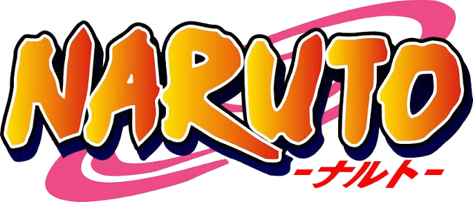

Proyectos

Recomanga
Aplicación web enfocada en recomendaciones de anime y manga con diseño adaptable.
Sombra
Pequeño juego hecho en 2d en grupo para las practicas profesionalizantes realizadas en Globant.
Estoy cursando el último año de la tecnicatura en programación y me gusta el desarrollo web. Disfruto armando tanto la parte de atrás de los sistemas como la interfaz visual, siempre tratando de que las cosas funcionen bien y queden prolijas.

Aplicación web enfocada en recomendaciones de anime y manga con diseño adaptable.
Pequeño juego hecho en 2d en grupo para las practicas profesionalizantes realizadas en Globant.